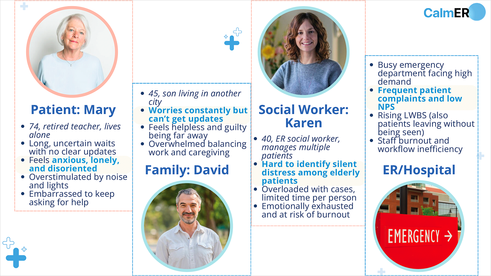
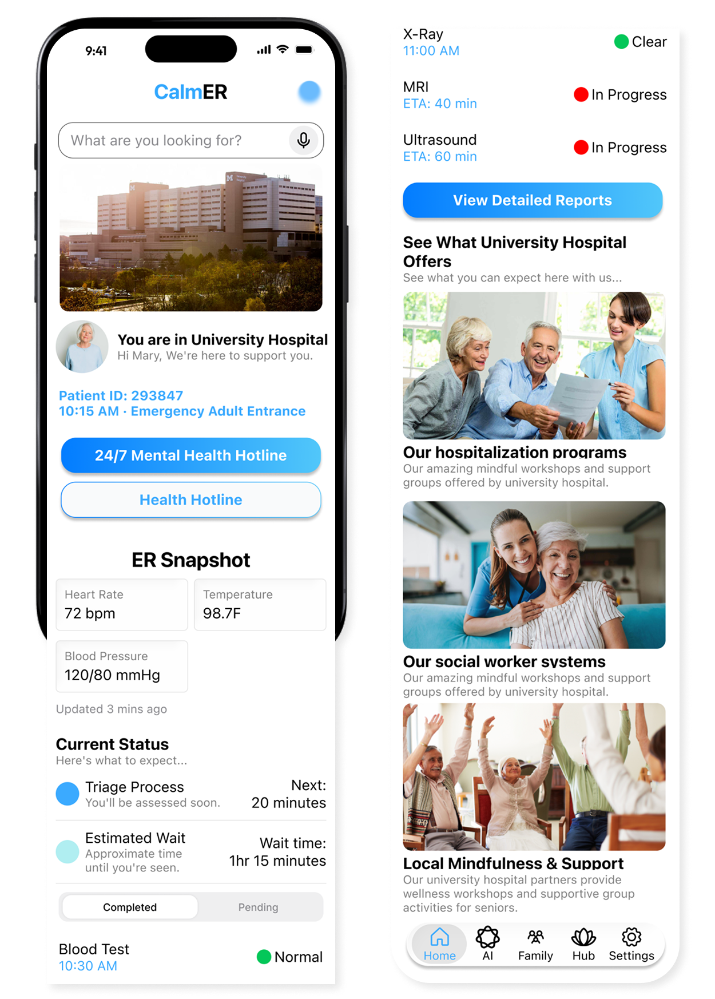
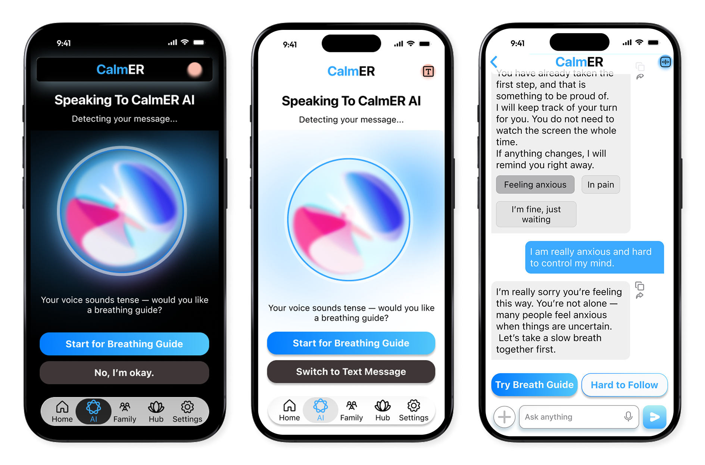
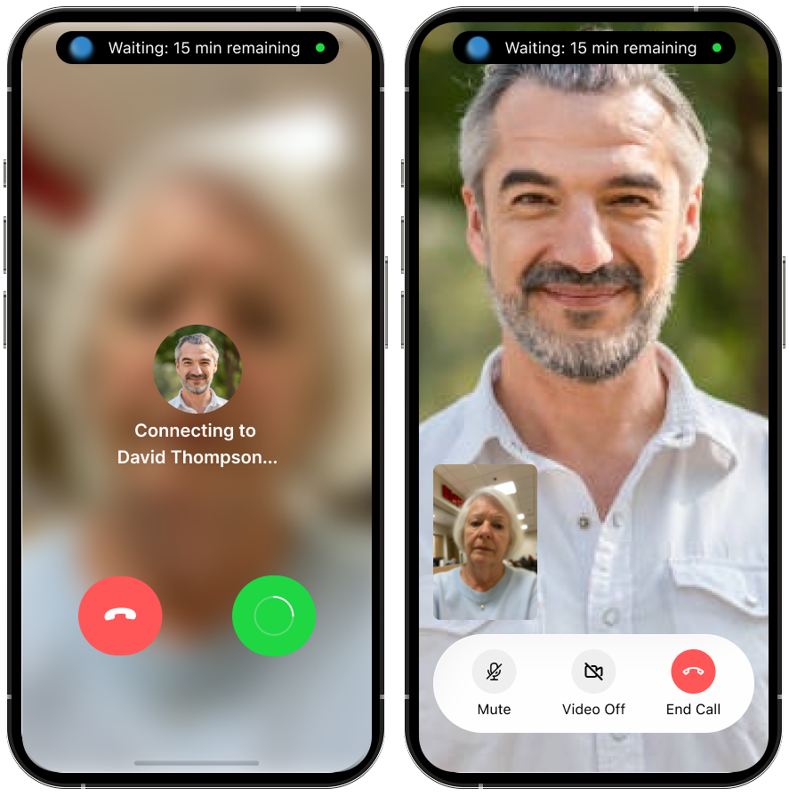
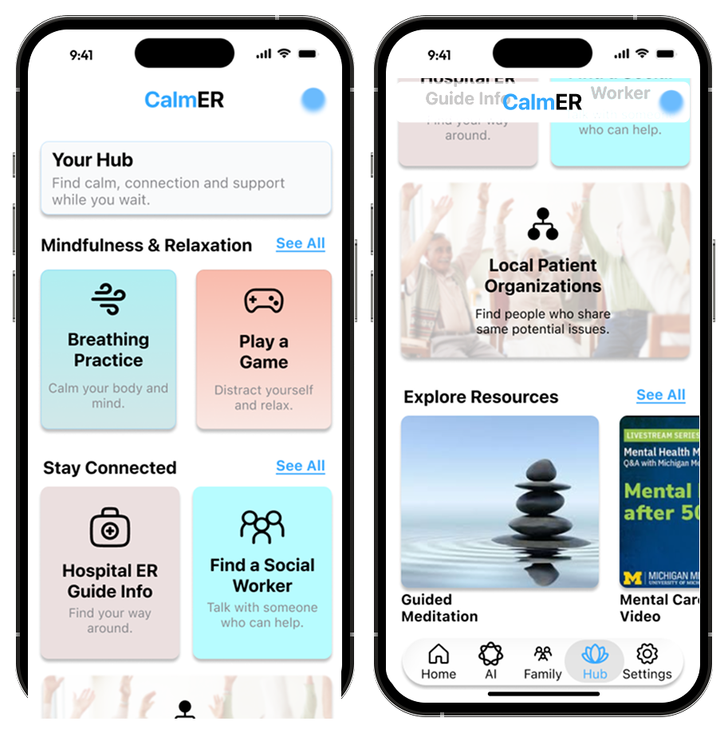
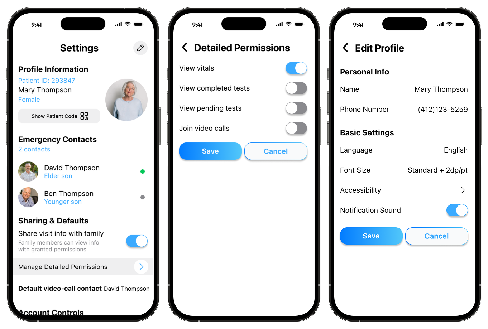
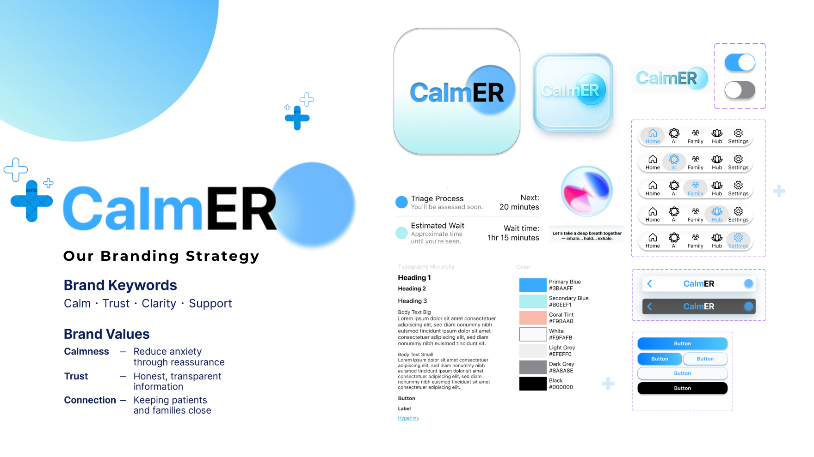

CalmER
A calming companion app for emergency room patients, reducing anxiety through information transparency and personalized support.
ROLE
UX Designer
TIMELINE
6 weeks
TEAM
6 members (PM, 2 UX Designers, Analyst, Tech, Generalist)
TOOLS
Figma, Miro
An older woman comes to the ER alone. A nurse takes her vitals and tells her to take a seat. An hour passes. Then another. No updates, no indication of where she is in the queue, no one to ask without feeling like a burden. Eventually she decides it's probably not that serious — and quietly heads home. The wait itself wasn't the problem. Not knowing was.
How might we help older adults feel informed and cared for during long ER waits — not just physically, but emotionally?
✦ SITUATION
Designing for the emotional cost of waiting
CalmER is a mobile companion app for older adults during ER waits, built for the Michigan Tech Innovation Jam in 6 weeks. The average ER wait is 6.5+ hours — for seniors who arrive alone, that time is filled with confusion, anxiety, and isolation. We weren't trying to shorten the wait. We were designing to reduce its emotional cost. And we designed for more than one user: the patient sitting alone in the waiting room, and the family member far away who can't get any updates.
Meet Mary
Mary, 74 — Retired schoolteacher
She came to the ER alone for sudden dizziness. She doesn't know what's happening, how long she'll wait, or who to ask. The nurses are busy. Her son David is in another city. She keeps looking at the clock.
"I just want to know someone is taking care of me."

✦ RESEARCH → DECISION
From insight to design
We ran an 8-person survey alongside secondary research (ACEP data, hospital satisfaction studies, expert consultation) — synthesized via affinity mapping.
7/8
open to AI support during ER wait
6/8
said info clarity was "rarely" or "never" sufficient
5/8
waited 1–3+ hrs with no meaningful updates
#1
desired feature: voice reassurance + progress updates
What we saw
Uncertainty hurts more than the wait
Seniors waiting 8+ hrs doubled 12%→20% (2017–2024). LWBS rate nearly doubled to 2.1%.
Constraint
We can't predict or control medical timelines — promising exact wait times would be dishonest and raise expectations we can't meet.
Decision
Stage-based timeline — "Triage Complete → Lab Pending" — instead of a countdown timer. Process clarity replaces time pressure.
What we saw
Seniors need reassurance, not raw data
33M senior ER visits/year. Overnight stays raise mortality risk ~40%. Raw vitals without context added anxiety.
Constraint
AI cannot give medical advice. We needed to provide comfort without crossing into diagnosis or clinical guidance.
Decision
AI companion positioned as emotional support only — calming conversations, breathing guides, plain-language stage explanations. Never medical advice.
What we saw
A familiar face beats any notification
Family presence — even remote — is one of the most effective anxiety reducers in medical settings.
Constraint
Can't add burden to already-stretched staff. The family connection had to be patient-initiated and fully self-serve.
Decision
One-tap video call over a status dashboard. David sees triage progress through Dynamic Island during the call — presence and information in one interaction.
What we saw
Older adults have real usability barriers
Vision decline, motor impairment, and low trust in AI are all common in the 65+ population.
Constraint
Must be accessible for seniors with vision and motor impairments — accessibility couldn't be a layer added at the end.
Decision
Voice input, multiple-choice prompts instead of open text, 14–28px type scale, adjustable font size in Settings, and blue as primary colour (research-backed trust signal for older adults).
✦ COMPETITIVE ANALYSIS
Where existing tools fall short
We mapped five existing products against CalmER's core features. Every competitor addresses one piece — queue visibility, family updates, or emotional support — but none closes the loop across all three. That gap is exactly what CalmER targets.
| Feature | CalmER | Epic MyChart | Emergency Q | The Patient Wait |
|---|---|---|---|---|
| Live triage / queue status | ✓ | partial | ✓ | ✓ |
| Family status sharing | ✓ | ✗ | ✗ | ✗ |
| One-tap family video call | ✓ | ✗ | ✗ | ✗ |
| AI emotional companion | ✓ | ✗ | ✗ | ✗ |
| Distress / "I need help" button | ✓ | partial | partial | ✗ |
| Social worker access | ✓ | ✗ | ✗ | ✗ |
| Designed for seniors | ✓ | ✗ | ✗ | ✗ |
Epic MyChart handles records but not emotional support. Emergency Q and The Patient Wait show queue position — but nothing else. None of them serve the family member waiting at home.
✦ DESIGN FRAMEWORK
The 3C Framework: Clarity · Calmness · Connection
Clarity
Stage-based progress instead of unpredictable countdowns. Clear language at every step.
"When I know what's next, I feel less afraid."
Calmness
Soft colors, breathing guides, and an AI companion that supports — not advises medically.
"It feels like someone is there with me."
Connection
One-tap family video call. Real-time status updates for remote family members.
"I can see my son's face. That helps more than anything."
✦ KEY FEATURES
Five screens, one goal: make waiting feel human

Home
Everything Mary needs to know, without the overwhelm
Check-in confirmation, vitals, triage stage, and estimated wait — all in plain language, no countdown timer. A persistent "I Need Help" button and one-tap mental health hotline let Mary reach support without flagging down busy staff.
Clarity principle → orientation replaces uncertainty

AI Companion
Someone is always there — even at 2am
The companion detects emotional cues in voice tone — if Mary sounds tense, it proactively offers a breathing guide. Available via voice or text, it explains medical stages in plain language and is positioned explicitly as emotional support, never clinical advice.
Calmness principle → empathy without overstepping

Family Call
A face is worth a hundred status updates
One tap connects Mary to David; during the call, he sees live triage progress through Dynamic Island — presence and information in a single interaction. Video over a shared dashboard: a familiar face reduces anxiety faster than any status card.
Connection principle → presence beats information

Resource Hub
Turning idle time into grounding time
Breathing exercises, mindfulness tools, ER guides, and a "Find a Social Worker" button — all in one place. Instead of scrolling anxiously, Mary has structured, constructive options and a clear path to human support.
Calmness principle → structure reduces helplessness

Settings & Privacy
Mary decides who sees what — down to the test level
Mary controls exactly what David can see — vitals, completed tests, pending tests, and video calls each have their own toggle. Accessibility settings (text size, language, simplified mode) let the app adapt to her, not the other way around.
Connection principle → privacy by design, control builds trust
Try the Interactive Prototype
Full emergency response flow in Figma
✦ ACTIONS — DESIGN SYSTEM
Every visual decision had a reason
I built the Figma component library from scratch — colour tokens, typography scale, button states, navigation bars, and list items. Every choice was grounded in how older adults actually perceive and interact with interfaces, not just aesthetic preference.
Blue as the primary colour
Research on colour perception in older adults consistently shows blue is associated with trust, calm, and reliability — the three things Mary needs to feel in a stressful ER environment. It wasn't a brand choice; it was a research-informed one.
Typography scale for senior vision
The default type scale runs from 14px minimum to 28px maximum — larger than typical mobile apps. Users can also adjust font size in Settings, scaling up further. No text in the interface falls below what's legible for adults with mild vision decline.

✦ RESULTS
Health Track Top 3 — Innovation Jam
CalmER was recognised as a Top 3 project in the Health track at the Michigan Tech Innovation Jam. The judges highlighted the emotional design approach — specifically the 3C framework and the decision to prioritise video calling over text updates — as standout contributions.
33M
Senior ER visits/year addressed by CalmER's design
6 wks
From problem to hi-fi prototype in a competition sprint
Top 3
Health Track, Michigan Tech Innovation Jam
✦ REFLECTION
Decisions we made — and ones we didn't finish
Emotional design isn't decoration — it's a functional requirement when users are scared or in pain. These are the decisions that shaped the final design, and the ones we would have pushed further with more time.
Decisions we made
Stage-based timeline over countdown
"Triage Complete → Lab Pending" reduces anxiety more than "est. 2 hours" — predictable process beats unpredictable time.
Designing AI for seniors, not around them
We knew older adults can be reluctant to engage with AI, so the companion uses voice input, a gentle tone, and multiple-choice prompts instead of open text fields — lowering the cognitive barrier to entry without feeling patronizing.
Video call as the status update
We debated a separate status dashboard for family. But pushing updates to a text thread added cognitive load — and didn't solve the real need. Instead, when Mary video calls David, he can see her triage progress in real time through Dynamic Island. Presence and information in one interaction.
Scoping to Mary's view only
We only designed the patient-facing interface. Family and social worker views were acknowledged — Mary can reach both with one tap — but their own screens were out of scope for a 6-week sprint. A deliberate call, not an oversight.
If we had more time
Social worker flow
The hub has a one-tap button to contact a social worker, but we never designed Karen's side. Ideally, the app would flag emotionally distressed patients automatically — letting Karen prioritize without needing to check in manually.
Usability testing with actual seniors
Our design decisions around cognitive load and AI trust are grounded in research — but they need validation with real older adults in ER settings, not just peer feedback in a sprint.